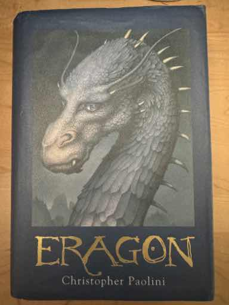
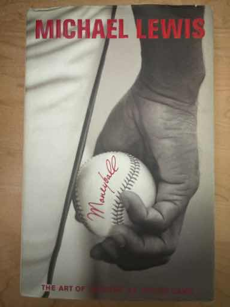
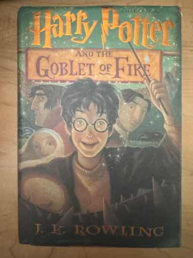

Two summers ago, I went on a roadtrip with a friend from Denver to San Francisco. First, we drove west across Colorado, climbing up through the Rocky Mountains. Next, we crossed over into Utah and visited many National Parks, including Arches National Park in Moab and Bryce Canyon National Park.
Then, we crossed over into California through Death Valley, and our trusty car overheated from the suffocating summer heat! Fortunately, we were able to drive out of Death Valley at night, and travel up the coastal highway Route 1 until we reached San Francisco.
O'Hara's is a fantastic restaurant located in Newton, Massachusetts. There are many reasons why O'Hara's is my favorite restaurant, but first and most importantly, the food is amazing. My family always goes for their pretzel bites as an appetizer, which come salted and with a delicious beer-based cheese sauce.
For the main course, some of my favorites are Rafael's Burger, their fried chicken sandwich, and the mac and cheese. The portions range from generous to massive, with their shepard's pie being large enough for at least a day or two of leftovers. Also, the prices are incredibly reasonable and O'Hara's boasts a lively atmosphere. However, if you want to go on a weekend, make sure to go early, or else you'll be in for a long wait!
All things considered, eating an early dinner at O'Hara's is definitely worth it, considering the quality of food and service that O'Hara's provides.
My favorite food is grilled chicken with rice. To prepare this dish, I first cut the chicken into thin slices, and then cook the chicken until it is lightly charred on the outside. As the chicken is cooking, I add different seasonings to the chicken to give it extra flavor, including onion powder, black pepper and smoked paprika.
Once the grilled chicken has been fully cooked, I pair it with rice, which I prepare in advance or prepare at the same time as the grilled chicken. Lastly, I sometimes add either a garlic aoili or a siracha aoili to give the chicken additional flavor.
| Name of Book | Image of Cover | Author | Short Summary |
|---|---|---|---|
| Steve Jobs | Walter Isaacson | A detailed biography that covers the life story of successful tech entrepreneur Steve Jobs. The book begins by discussing his upbringing and his pilgrimage to India as a young adult, and later discusses his successful career as an innovator and leader at Apple and Pixar. | |
| Eragon |  | Christopher Paolini | The first book in the Inheritance fantasy series, this book begins with a boy named Eragon who finds a dragon egg. He develops a close relationship with the dragon once it hatches and names the dragon Saphira. Over time, the bond between the two strengthens, and they go on many adventures during their travels across the land of Alagaesia. |
| Moneyball: The Art of Winning an Unfair Game |  | Michael Lewis | Moneyball: The Art of Winning an Unfair Game is a book about the extraordinary success of the Oakland Athletics in the late 1990's, led by general manager Billy Beane. Beane and his sidekick Paul DePodesta use statistical analysis to more effectively evaluate baseball players, allowing them to compete with the leagues best teams with only a fraction of the financial resources. |
| Harry Potter and the Goblet of Fire |  | J.K. Rowling | The fourth book in the popular Harry Potter series, Harry is entered into the dangerous Triwizard Tournament by an unknown source, and is forced to compete against much older and more experienced wizards. Over the course of the book, he must surpass many challenging obstacles and face Lord Voldemort once again as he returns to power. |